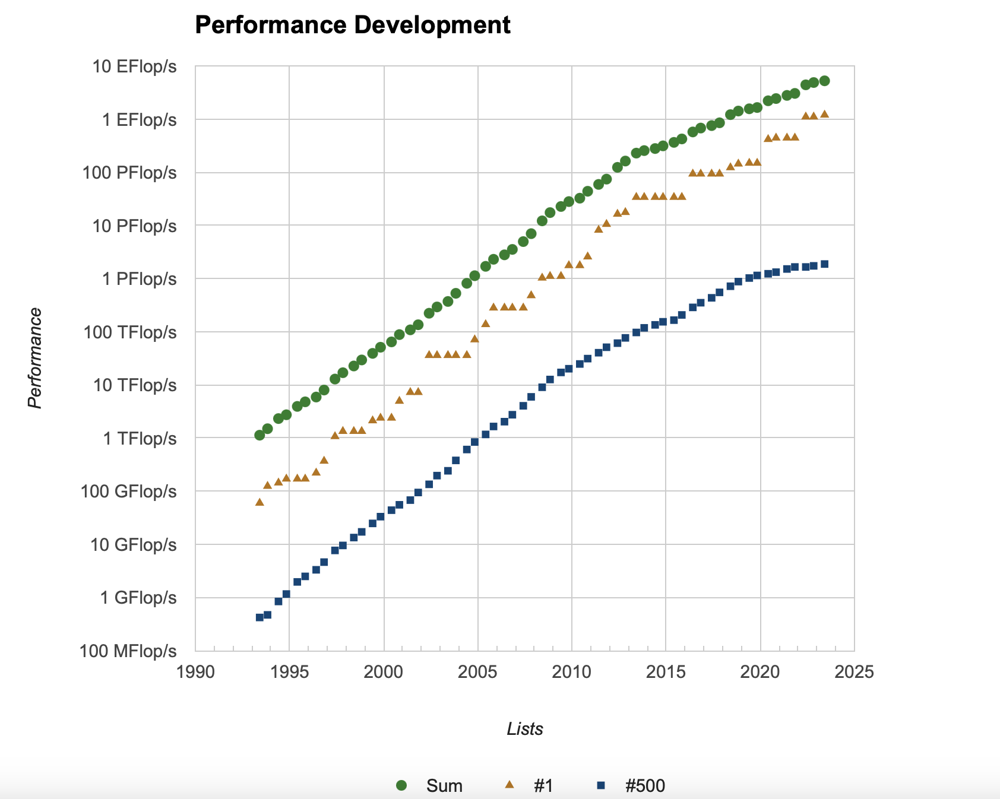

What is High-Performance Computing?¶
Floating point numbers¶
Most applications in High-Performance Computing rely on floating point operations. These are
operations such as 1.2 + 3.7, or 2.8 * 5.7. Most large scale computational simulations rely
on these operations. Floating point numbers are defined in the IEEE 754 standard. This is one of the most famous standards in numerical computing. Here, we will not go into all the details of this
standard but just consider the two most important types: single precision and double precision floating point numbers.
We will define floating point numbers using the following slightly simplified model. The floating point numbers are the set
The number \(b\) is the base, which is always \(2\) on modern computers, \(m\) denotes the mantissa, \(e\) the exponent, and \(p\) determines the available precision.
Floating point numbers are not equally spaced on the number line. To understand the spacing consider the term \(\frac{m}{b^{p-1}}\). We have
These are all the possible floating point numbers between \(1\) and \(2\). To obtain the floating point numbers between \(2\) and \(4\) we multiply these numbers by \(2\), and so on. Hence, the floating point numbers become coarser spaced the higher we go. This makes sense.
The two most important classes of floating point numbers are the following:
IEEE double precision: \(e_{min} = -1022, e_{max} = 1023, p=53\)IEEE single precision: \(e_{min} = -126, e_{max} = 127, p=24\)
Roughly, double precision numbers give around 16 digits accuracy, while single precision numbers give around 8 digits accuracy.
An important number is \(\epsilon_{rel} = 2^{1-p}\). This is the smallest number in floating point arithmetic such that \(1 + \epsilon_{rel}\neq 1\). In double precision we have \(\epsilon_{rel}\approx 2.2\times 10^{-16}\) and in single precision \(\epsilon_{rel}\approx 1.2\times 10^{-7}\).
How many Flops/s do I have?¶
One of the most important measures for the performance of a computing device in High-Performance Computing is the number of floating point operations per second are possible. Below are a couple of performance numbers for different types of CPUs/GPUs.
Name |
Peak Performance (GFlops/s) |
Notes |
|---|---|---|
Intel i9-9980HK (8 Cores) |
307 |
The CPU in my laptop |
Intel Xeon Platinum 8280M (28 Cores) |
1612.8 |
One of the fastest CPUs on the market |
Raspberry PI 4 Model B |
24 |
A very cheap and fun to code for ARM CPU |
Nvidia RTX 3080 |
29768 |
Single precision peak for Nvidia’s new GPU generation |
PS5 GPU |
10280 |
Single precision peak of the new GPU for the PS5 |
XBOX Series X GPU |
12500 |
Single precision peak of the new GPU for the XBOX Series X |
The measure here is in GFlops/s, which is \(10^9\) floating point operations per second. This table has some very different systems. The first entry is my own Laptop CPU, which is what you would expect in a high-end desktop or workstation laptop. The next one is one of the fastest Server CPUs that Intel currently offers with 28 CPU cores. On the other end of the spectrum we have the Raspberry Pi with just 24 GFlops/s peak performance. It is a representative of a typical low-powered cheap ARM CPU. The ARM CPU in an IPhone 11 is many times faster and comparable with Intel desktop systems.
The table also contains numbers for the processing power of GPUs, graphics processing units. They are not only good for displaying great graphics but also highly parallel compute devices. We will later learn more about the differences of CPUs and GPUs. The new Nvidia RTX 3080 manages up to 30TFlops/s for single precision operations. While CPUs are good at single and double precision operations, GPUs are usually optimised for single precision operations since for graphics the reduced precision does not matter. However, one can also buy specialised compute devices from Nvidia that are optimised for double precision as well. Finally, we have the PS5 and XBOX Series X with around 10 and 12 TFlops/s in GPU performance, both of which are running AMD’s new RDNA 2 architecture, which has not yet officially been released.
The Top 500¶
For really large machines there is a regularly updated list of the world’s fastest supercomputers. The Top 500 shows which machines are the fastest in the world. The current number one is Fugaku, with a peak performance of 514 PFlops/s (1 PFlop/s is 1000 TFlops/s). Interestingly, this computer uses ARM CPUs, the same architecture that also powers almost all mobile phones in the world. It is interesting to consider the performance over time.

A biased definition of High-Performance Computing¶
Only 20 years ago a PS5 would have been the world’s fastest supercomputer. This hides an important message. What we consider as supercomputers now, will be standard desktop systems in the not too distant future.
It therefore makes little sense to talk about High-Performance Computing only if we develop on very big systems. What we have under our desk now, was a big system just a few years ago. My personal definition of High-Performance Computing is the following:
High-Performance Computing is concernced with developing tools, algorithms, and applications that can make optimal use of a given hardware environment.
In this sense, we can perform High-Performance Computing also on a Raspberry Pi or a mobile phone. And indeed, the trend goes to scalable development environments that allow us to make optimal use of hardware from a small low-powered ARM device up to the fastest supercomputers in the world.
While the software landscape is fast moving, there are certain development principles that have shown to be useful on any kind of device. In this module we want to discuss these techniques and how to achieve high-performing code on current CPU and GPU systems.